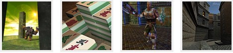

| >> |
01.O primeiro programa 02.Tipos de dados e declaração de variáveis 03.Exibindo os tipos de dados na tela 04.Funções básicas de entrada e saída 05.Execução condicional e controle de fluxo - 1/2 06.Execução condicional e controle de fluxo - 2/2 07.Repetição condicional 08.Funções de usuário e escopo de variável 09.Operadores matemáticos, unários e lógicos 10.Arrays e strings 11.Estrutura de dados e Tipo Definido pelo usuário 1/2 12.Estrutura de dados e Tipo Definido pelo usuário 2/2 13.O tamanho dos tipos 14.Ponteiros ou apontadores 1/5 - Básico 15.Ponteiros ou apontadores 2/5 - Ponteiros para Arrays 16.Ponteiros ou apontadores 3/5 - Ponteiros para estruturas 17.Ponteiros ou apontadores 4/5 - Ponteiros para funções 18.Ponteiros ou apontadores 5/5 - Alocação de memória 19.#Diretivas de compilação 20.Especificadores de acesso e armazenamento 21.Bits, bytes e bases numéricas 22.Conversões entre os tipos e type-casting (cast) 23.Argumentos da função main() 24.Funções recursivas e saltos incondicionais 25.Lendo e escrevendo em arquivos textos 26.Lendo e escrevendo em arquivos binários 27.Palavras finais 28. Patrocine a continuidade da Gameprog comprando os cursos técnicos: Jogos\Aplicações 3d com C\C++\DarkGdk Jogos\Aplicações 3d com C\C++ e DirectX 9 Jogos\Aplicações 3d com C# e DirectX 9 Gerenciado www.gameprog.com.br 
| >> |